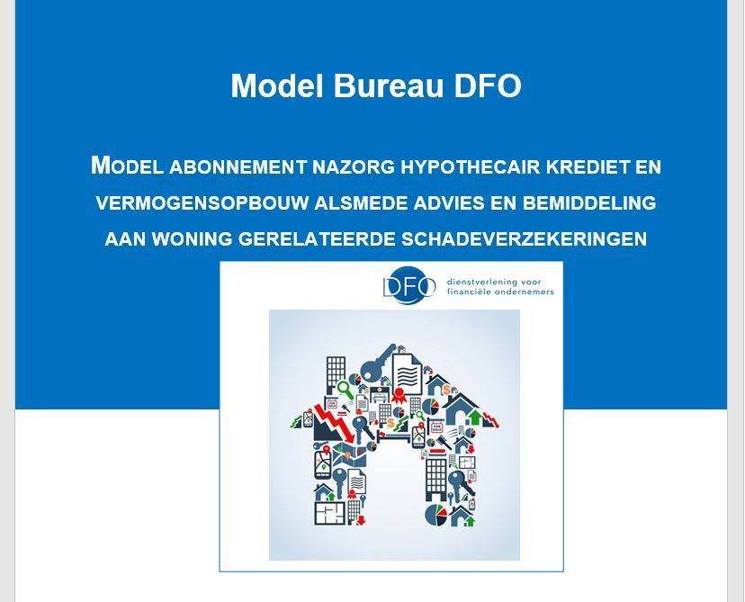

Abonnementsvoorwaarden Nazorg hypothecair krediet
Bureau DFO heeft abonnementsvoorwaarden beschikbaar voor de nazorg bij hypothecair krediet, inclusief de daaraan verbonden vermogensopbouwproducten, betalingsbeschermers en aan de woning gerelateerde schadeverzekeringen.
Artikelnummer 100075. Bestellen en betalen gaat via de webshop op dfobv.nl.
Omschrijving
Bureau DFO heeft abonnementsvoorwaarden beschikbaar voor de nazorg bij hypothecair krediet, inclusief de daaraan verbonden vermogensopbouwproducten, betalingsbeschermers en aan de woning gerelateerde schadeverzekeringen.
Splitsing advies en bemiddeling
Op het gebied van hypothecair krediet kiest een meerderheid van het intermediair bij invoering van directe beloning voor een verrichtingentarief. Dit is dus een vast tarief dat met de klant wordt afgesproken waarvoor het initiële advies wordt opgesteld en eventueel de klant wordt begeleid bij het afsluiten van het krediet zelf.
Veel kantoren overwegen om voor de periode nadat de hypotheek is afgesloten een abonnement aan te bieden.
Differentiatie binnen abonnement
Binnen een abonnement kan de klant de keuze worden geboden uit meerdere opties. Bijvoorbeeld keuze over de breedte van de begeleiding. In het door Bureau DFO opgestelde model worden standaard de advisering en begeleiding van de afgesloten hypotheek opgenomen. Facultatief kan de klant echter ook kiezen voor begeleiding van de aan de woning verbonden schadeverzekeringen, de in het kader van de hypotheek verbonden vermogensopbouwproducten en de eventueel afgesloten betalingsbeschermers.
Ook kan de klant binnen het abonnement bij bepaalde items kiezen voor differentiatie in tijd, waarbinnen bepaalde werkzaamheden plaatsvinden. Bijvoorbeeld een controle van de ontwikkeling van kosten en rendement eens in de twee jaar, of eens in de vier jaar.
Weer een andere differentiatie is de keuze om de begeleiding alleen te verlenen over de door de financieel dienstverlener zelf afgesloten hypotheekovereenkomsten en de daaraan verbonden vermogensopbouwproducten, schadeverzekeringen en betalingsbeschermers of deze dienstverlening ook ter beschikking te stellen voor producten die de klant elders heeft afgesloten, maar wel door het kantoor wil laten administreren of beheren. Uiteraard leiden deze keuzen tot verschillende abonnementstarieven.
Abonnementsvoorwaarden
De abonnementsvoorwaarden bestaan feitelijk uit twee modellen. Het eerste deel bevat de eigenlijke abonnementsvoorwaarden. Het betreft hier het vastleggen van de wens om een abonnement af te sluiten, de inhoud van de dienstverlening waarvoor de klant heeft gekozen en de overige formaliteiten die vereist zijn om het abonnement rechtsgeldig te doen zijn. Klanten kiezen binnen dit model uit drie typen dienstverlening: ‘Goud’, ‘Zilver’ of ‘Brons’, waarbij ‘Goud’ de meest uitgebreide dienstverlening omvat en ‘Brons’ de minst uitgebreide dienstverlening.
Het tweede deel bevat per dienstverlening een toelichting wat deze dienstverlening inhoudt. Dit is in een aparte bijlage opgenomen om de abonnementsvoorwaarden leesbaar en werkbaar te houden.
Modellen
De DFO abonnementsvoorwaarden hypothecair krediet kunnen zo ingezet worden binnen de eigen onderneming. Maar verstandiger is het om het model als een basis te gebruiken. Een basis waar u bepaalde diensten verwijdert die u niet kan, of wilt aanbieden, of juist diensten toevoegt die niet in het model staan, maar door u wel geleverd worden en waarmee u wellicht juist in uw regio onderscheidend bent.
Complete set
De complete set hypothecair krediet bestaat uit vier onderdelen:
- Model opdrachtverlening hypothecair krediet. Dit model kan gebruikt worden voor de overeenkomst met de klant voor het initiële advies.
- Abonnementsvoorwaarden Nazorg hypothecair krediet. Dit model kan gebruikt worden voor het aangaan van een abonnement. In de overeenkomst zijn de formele abonnementsvoorwaarden opgenomen.
- Toelichting dienstverlening. Dit betreft een uitgebreidere beschrijving van de activiteiten die zijn opgenomen in het modelabonnement waarbij ook regelmatig wordt toegelicht waarom het voor de klant van belang is dat een deskundig adviseur deze activiteit bewaakt en uitvoert.
- Model automatische incasso. Dit model kan worden gebruikt voor zowel het incasseren van het initiële hypotheekadvies als ook de nota’s in het kader van het abonnement.
Passende opleidingen, masterclasses en documenten
Opleidingen van Bureau DFO
Praktijkgerichte trainingen, webinars en leergangen.
Eendaagse trainingMasterclass: AI nazorg en onderhoud Hypotheken in 2026 | 1 (dagdeel, verdieping)
Data en locaties: zie het opleidingsportaal
Training: Bereken het toetsinkomen van een ondernemer voor zijn woning hypotheek
Data en locaties: zie het opleidingsportaal
Module 2 Opstellen van een Zakelijk Financieringsvoorstel met toelichting
Data en locaties: zie het opleidingsportaal
NVHP-masterclasses in Hoevelaken
Bij Bureau DFO; ook toegankelijk voor adviseurs die geen NVHP-lid zijn.
NVHP-masterclassKan de klant na overlijden in de woning blijven? Van testament naar hypotheekadvies (voorheen Testamentaire Clausules en hun impact op hypothecair advies)
Eerstvolgende: 21 dec 2026 · Hoevelaken
AI Gespreksverslagen
Eerstvolgende: 16 dec 2026 · Hoevelaken
Draagplichtovereenkomst
Eerstvolgende: 8 dec 2026 · Hoevelaken · nog 3 plaatsen
Documenten & modellen
Direct toepasbaar in je praktijk, te bestellen in de webshop.
Modeldocument